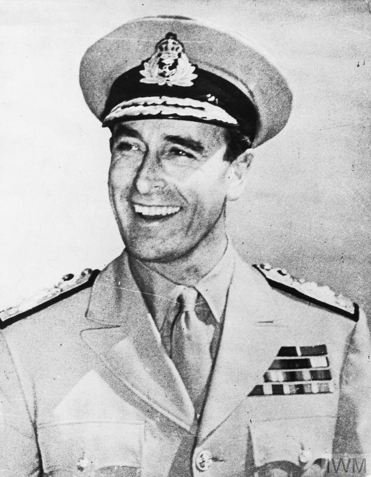

Nehru was apart of the Indian National Congress. According to him, the partition would create distress in people social and econical lives.

Muhammad Ali Jinnah supported the idea of the partition as he was worried that Muslims would lose their rights and become a minority.

Louis Mountbatten. The man in charge of the India Parition. He was tasked with splitting up India to create Pakistan, although this act was seen as to quick and rash, causing violence.
The Aum or Om is a symbol of Hinduism. During the India Partition, the Hindu's occupied most of India, and most disagreed with the partition.
The Crescent and Star is a symbol is Islam. A lot of Muslims didn't like the partition as they were already a minority, and the partition would just greater their suffering.